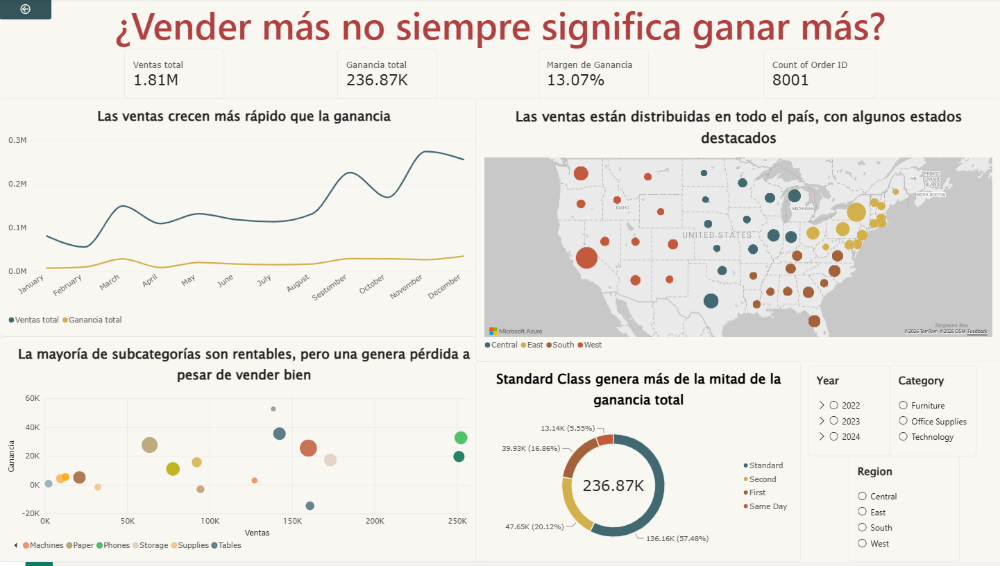

1. Definición del problema
Contexto
Este caso busca mostrar un análisis de diagnóstico y perfilamiento de datos junto con un tablero interactivo en Power BI mediante un relato visual. Los datos provienen de una empresa con distribución en Estados Unidos e incluyen información transaccional, como segmentos de clientes y categorías de productos.
Pregunta de investigación
¿Vender más siempre implica ganar más? Esta duda surgió al revisar la información proporcionada.
Sub-preguntas
- ¿Qué categorías generan más ventas frente a lo que realmente se obtiene en ganancias?
- ¿Qué ubicaciones generan más ventas frente a lo que realmente se obtiene en ganancias?
- ¿Qué modos de envío generan más ventas frente a lo que realmente se obtiene en ganancias?
2. Obtención de datos
Debido a limitaciones externas del equipo usado para el análisis, no fue posible extraer los datos directamente del “Folder”, que contenía dos archivos Excel con la información necesaria. En su lugar, se combinó el archivo CSV de dataset1 con el Excel de dataset2 mediante la herramienta “merge” de Power BI. Así se evitó cualquier error y los datos quedaron en buen estado.
| Fuente | Tipo | Uso |
|---|---|---|
| Dataset1 | CSV | Transacciones de venta |
| Dataset2 | Excel | Transacciones de venta |
| Merge1 | Consulta combinada en Power BI | Tabla final del análisis: 8001 registros |
La información analizada incluye 8001 registros de transacciones de venta con variables como fecha de orden y envío, modo de envío, segmento de cliente, ubicación geográfica, categorías y subcategorías de producto, ventas, cantidad, descuento y ganancia.
3. Limpieza y transformación (ETL)
Durante el perfilamiento se identificaron y corrigieron lo siguiente:
| Diagnóstico | Decisión |
|---|---|
| Datos faltantes | No se detectaron datos faltantes en la sección de transformación. Las pruebas de verificación correspondientes no revelaron valores vacíos ni ausentes. |
| Formatos inconsistentes | Se identificaron datos con fechas en formatos mixtos y códigos postales que perdían el cero inicial al interpretarse como números. Ambas inconsistencias se resolvieron al definir la configuración regional adecuada (inglés de Estados Unidos) durante la conversión. |
| Columnas irrelevantes | La columna Country contenía un solo valor repetido en las 8001 filas (United States), por lo que se eliminó. También se retiraron Row ID, Product ID, Customer Name y Postal Code. |
| Duplicados | No se encontraron filas duplicadas por medio de los análisis necesarios. |
| Valores atípicos | Se detectaron ciertos valores en Profit y Sales fuera del rango habitual. Se decidió conservarlos, pues reflejan una variabilidad del negocio que ocurre en la vida real, provocada por descuentos o grandes órdenes de compra. |
| Estandarización | Se ajustó la columna Ship Mode para estandarizar las categorías, quitando la palabra Class para conservar solo el nombre del tipo de envío. |
4. Modelado de datos
- Tabla única Merge1, resultado de combinar Dataset1 y Dataset2.
- Jerarquía de fechas automática de Power BI sobre Order Date (año, trimestre, mes) para el análisis en el tiempo.
- Tres medidas DAX para los indicadores del tablero:
Ventas total = SUM(Merge1[Sales])
Ganancia total = SUM(Merge1[Profit])
Margen de Ganancia = DIVIDE([Ganancia total], [Ventas total])5. Visualización de datos

Dashboard diseñado para el storytelling. Elaboración propia con base en los datos suministrados. Haz clic en la imagen para verla en tamaño completo.
Storytelling
El dashboard fue diseñado siguiendo una narración de tres partes:
- Panorama general: las cuatro tarjetas (ventas totales, ganancia total, margen de ganancia y total de órdenes) ofrecen una visualización del desempeño general, esto se acompaña de un gráfico de líneas que compara la evolución mensual de ventas y ganancia.
- Hallazgo central: el gráfico de dispersión (Sales vs. Profit por subcategoría) permite identificar visualmente qué subcategorías, a pesar de vender mucho, no son rentables.
- Contexto geográfico y de operación: un mapa de burbujas muestra la distribución por estado y un gráfico de dona presenta la participación de cada modo de envío en la ganancia total.
Además, se incluyeron segmentadores o listas interactivas de categoría, región y fecha de orden, que permiten explorar el comportamiento de los datos.
Principales hallazgos
- 1.81 M Ventas totales
- 236.87 K Ganancia total
- 13.07 % Margen de ganancia
- 8001 Órdenes
- 57 % Ganancia vía Standard
- A lo largo de los años, las ventas mensuales oscilan entre 0.05 y 0.3 millones, mientras que las ganancias permanecen bajas de forma constante. Esto podría indicar que el aumento en ventas no implica mayor rentabilidad.
- Al revisar las subcategorías de producto, se nota que la mayoría es rentable, sin embargo, algunas como Tables, Bookcases y Supplies generan ventas importantes pero pérdidas, lo que indica posibles problemas con descuentos o costos no cubiertos por el precio de venta.
- La distribución geográfica de las ventas muestra que estas se reparten entre las cuatro regiones del país, sin una concentración significativa en algún estado.
- El envío Standard es el más utilizado y el que aporta la mayor ganancia total (aprox. 57 %), lo que sugiere que no se requieren opciones más costosas para elevar la rentabilidad.
6. Documentación
Recomendaciones finales
Las estrategias comerciales deberían centrarse en las subcategorías y regiones con ventas elevadas y alta rentabilidad, en lugar de priorizar el volumen total. Dado que el envío estándar es el modo más rentable y utilizado, cabe evaluar si es posible optimizar más esa logística en vez de fomentar opciones más costosas. Es necesario revisar los descuentos en las subcategorías que generan pérdidas pese a su buen número de ventas, pues el margen negativo indica que los descuentos superan la contribución marginal del producto.